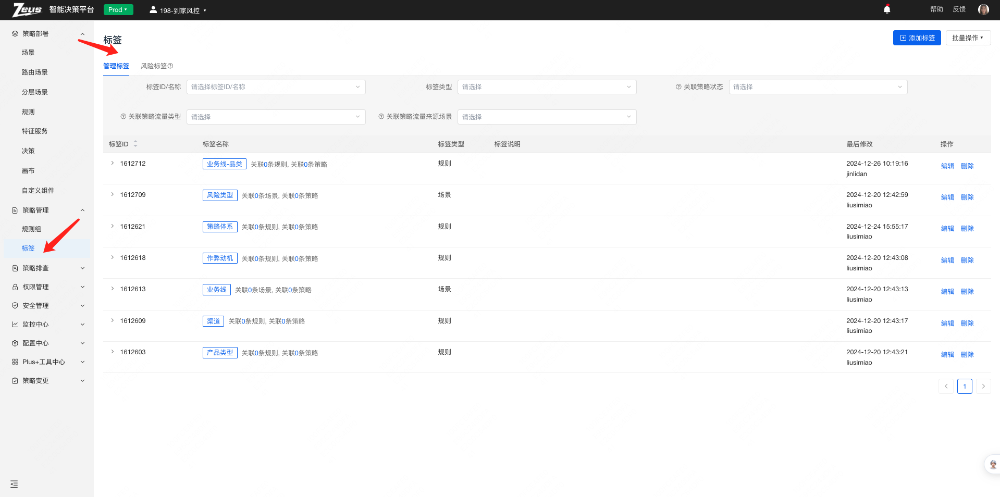
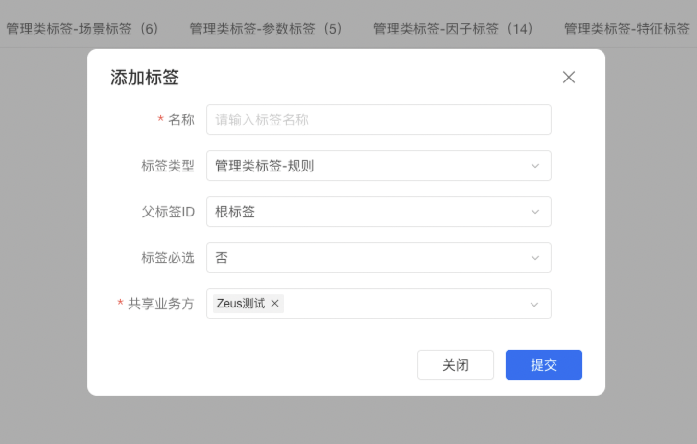
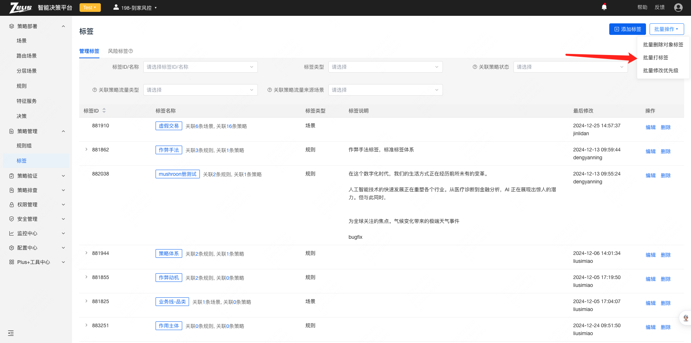
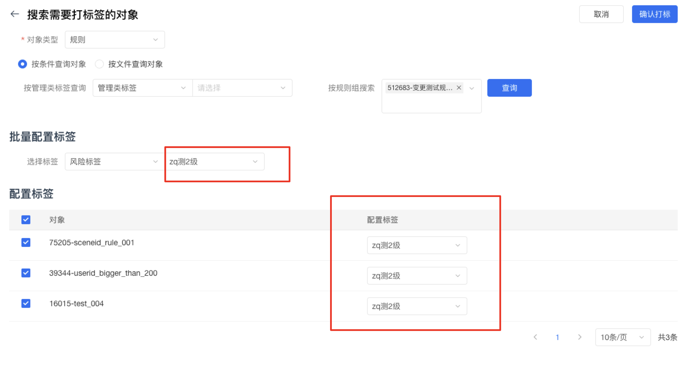

说明：管理类标签
一、背景
随着风控规则、活动场景数量越来越多，维护成本日益增加，为解决上述问题，推出标签体系，为规则和活动场景分类。标签有多重分类维度，且分类维度有可能会新增，不同业务会有不同的分类维度，以反作弊为例，按公司业务分类：支付、早餐、外卖；按新人属性分类，如纯新客、品类新客、非新客等。总结下标签有如下作用：
- 方便批量处理：出现参数异常，相关规则批量设置为不生效；新增活动场景，可按照标签批量添加规则
- 查询、统计需求：提供查询接口用于统计分析
二、名词解释
|
名词 |
解释 |
|---|---|
|
管理类标签 |
管理类标签用于在平台管理规则、场景等实体。 |
|
风险标签 |
风险标签仅能与规则绑定，有优先级属性，用于将规则本身携带的信息归类成体系。规则在命中后，会将这部分信息实时输出给调用方/下游。说明：风险标签（infocode） |
|
父标签 |
当前标签归属的上一级标签即为当前标签的父标签。 |
|
标签层级 |
目前支持最多形成6级关系。即用户可创建的最高标签层级为1级 ，最低为6级 |
|
根标签 |
系统内置的0级标签，默认作为所有1级标签的父标签。 |
三、操作说明
3.1 标签管理
|
模块 |
说明 |
图例 |
|---|---|---|
|
管理类标签-管理页 |
配置中心-标签-管理类标签 定义：管理类标签用于在平台管理规则、场景等实体。 标签以层级方式查看，可点每个标签前方的箭头，选择展开或收起其子标签。 |
 |
|
创建新标签 |
在标签页面点击 添加标签，填写要创建的新标签的信息，包括 名称、标签类型、父标签ID、标签必选，点击 添加 即可；
|
 |
3.2 给对象打标
给各类对象打管理类标签，方法基本相同，都在对象的编辑页，点击新增标签，下拉选择即可。
|
操作 |
文档指南 |
|---|---|
|
给规则打标 |
|
|
给场景打标 |
3.3 批量打标与批量删除
|
说明 |
示意图 |
|
|---|---|---|
|
批量打标 |
功能描述：搜索定位一批对象（规则、场景），选择一个期望配置的标签。给这批对象批量打标 入口：批量操作-批量打标签 1.搜索要打标的对象 对象类型：选择要打标签的对象（规则、场景），点击【查询】下方配置标签List会根据搜索条件展示所有搜到的对象。 2.批量配置标签 需要在此处选择，想要给这批对象打上什么标签。（对象为规则时，还需要选择打管理类还是风险标签）如图中，选择“zq测试2级”后，下方List中所有对象将要打上的标签都变为“zq测试2级”。 3.配置标签 此时可以针对其中具体的某条对象进行微调，下拉选择别的标签。 4.确认打标 勾选最终需要确认打标的项目。 最后点击【确认打标】，将给勾选项目，打上所配置的标签。 |

 |
|
批量删除 |
功能描述：搜索定位一批具有一个共同标签的对象（规则、场景），将从对象中删除该标签。 1.搜索要删除的对象标签 对象类型：选择要删除标签的对象（规则、场景） 2.配置标签 下方配置标签list中，可以勾选最终需要确认删除的标签。 3.确认删除 最后点击【确认删除】，将会把该标签从对象中删去引用关系。 |
|


四、FAQ
|
问题 |
答 |
|
|---|---|---|
❤️ 欢迎使用并在文档评论区提供宝贵意见与建议！